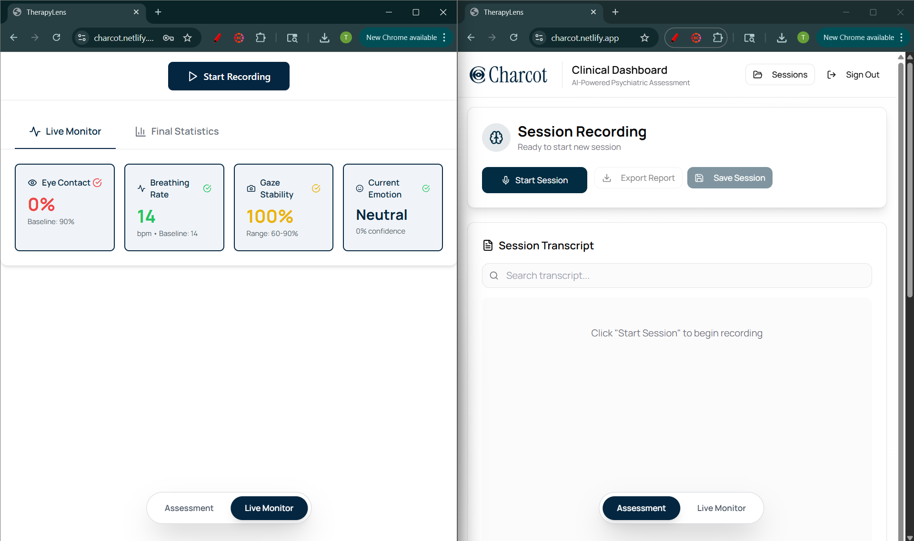

Click Here to Learn More!
For this hackathon project, I worked with a team of four to build Charcot, a multimodal AI copilot for neuropsychiatric diagnosis that provides real-time diagnostic support during live patient interviews. The platform analyzes both conversational and nonverbal cues to help psychiatrists catch diagnostic patterns they might miss. I contributed to implementing real-time speech-to-text transcription using AssemblyAI, facial landmark detection with MediaPipe for behavioral analysis, and developing custom algorithms for eye contact monitoring, gaze stability tracking, and breathing rate estimation. We built a privacy-first architecture with 100% local video processing and created an intuitive clinical interface that psychiatrists could use without disrupting their workflow.
- Technologies Used: React.js, Python, Flask, TensorFlow, MediaPipe, AssemblyAI, FaceAPI.js, Node.js, Vite, Tailwind CSS, Recharts, Lucide React, OpenCV, NumPy, DeepFace
- Live Demo: Charcot
- Video Demo: YouTube Demo
